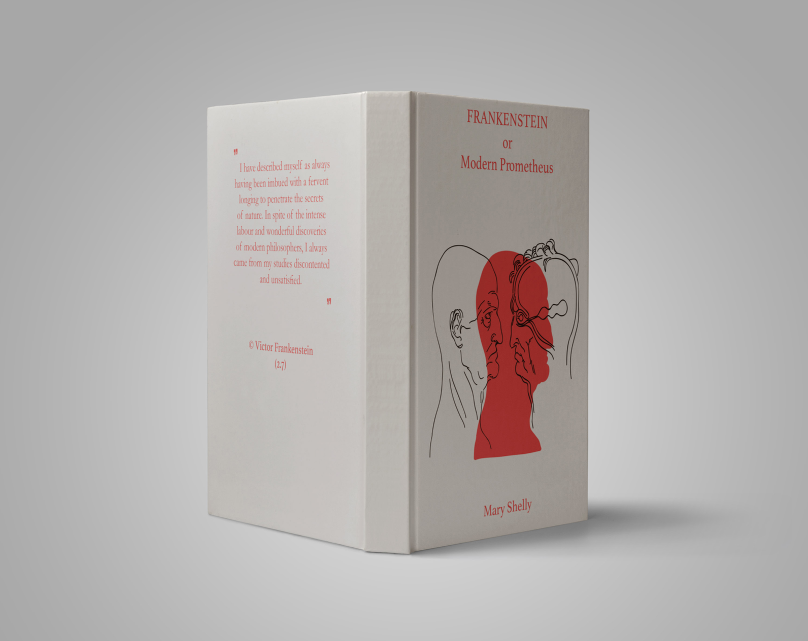
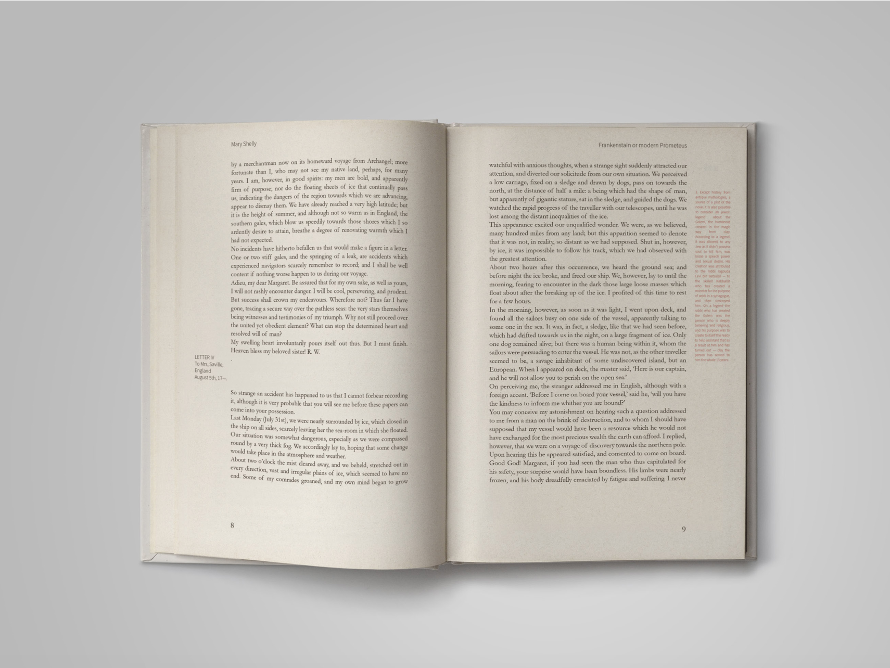
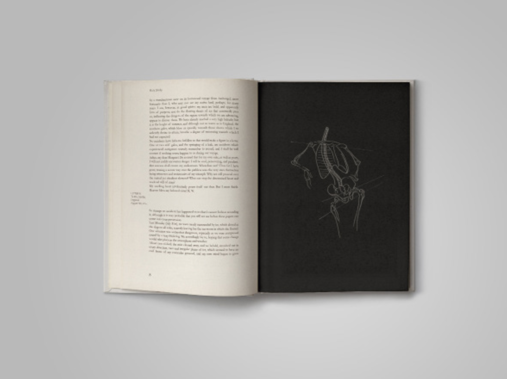
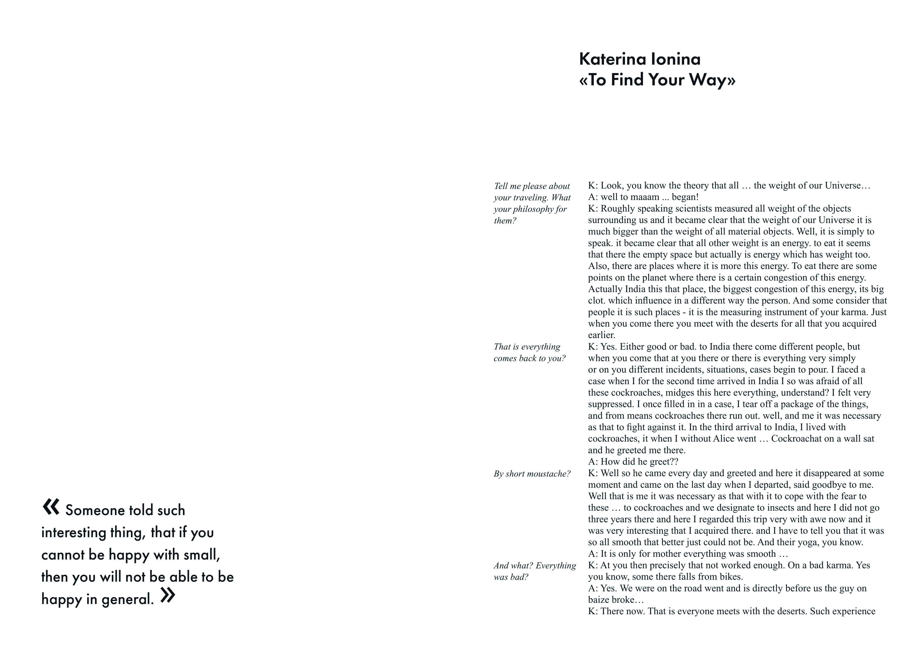
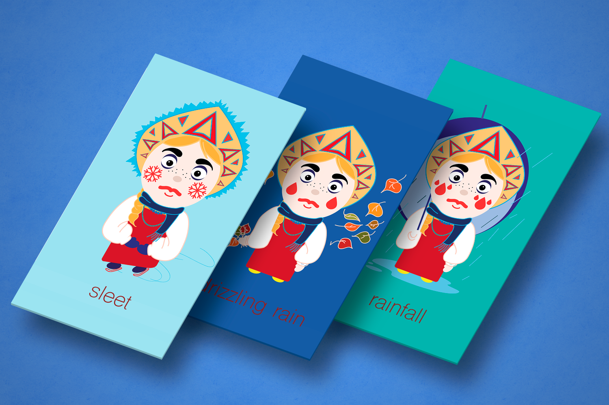
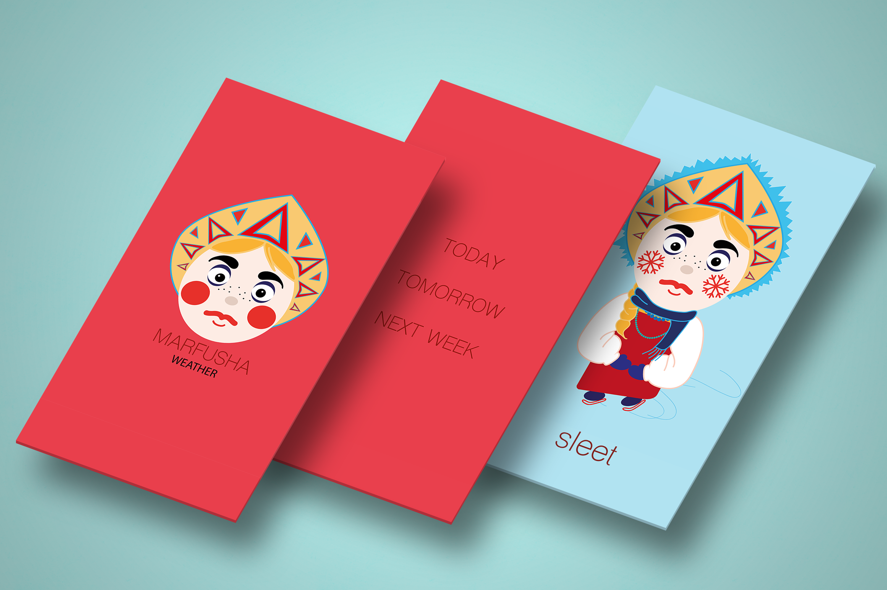
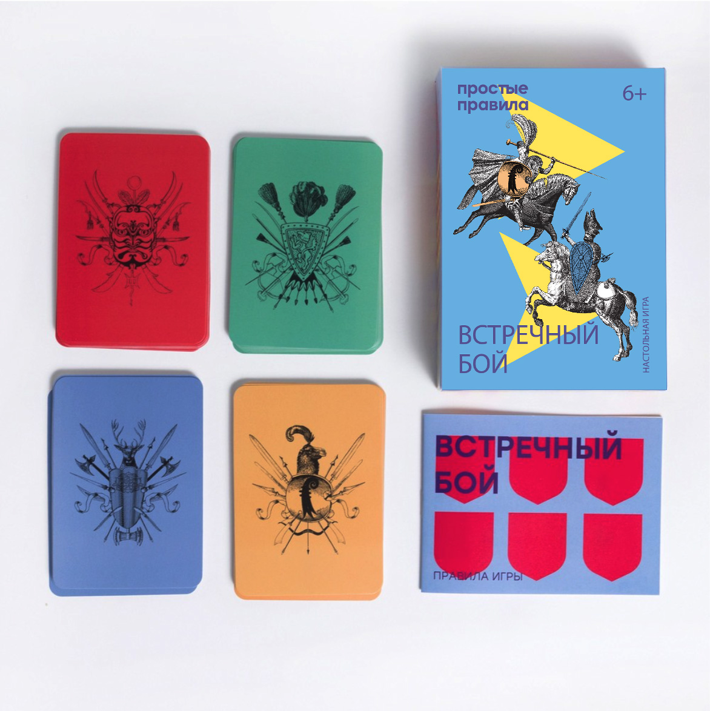
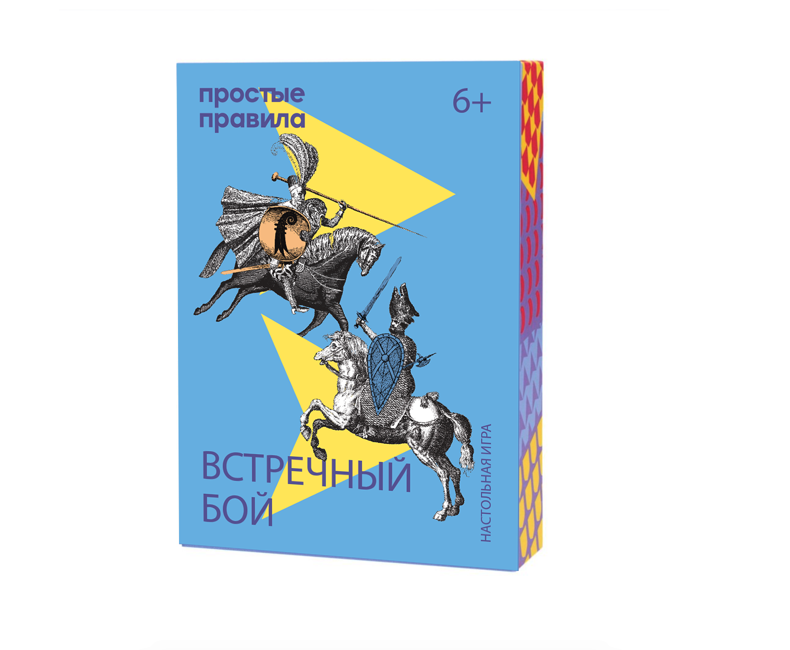

Graphic design
Frankenstein or Modern Prometheus
The idea of this project was to make a new design for an iconic book Frankenstein or modern Prometheus, but to use a new approach of understanding the text. It's no secret that in this text there are many hidden philosophical motives. My idea was to tell the reader about them. Therefore, in this version of the book you can find all references to the philosophy of mythology and history. This allows you to better understand not only the novel itself, but also its author.
  Magazine
Inspired by the history of my sister's travels to India and Tibet, I wanted to learn about this as much as possible and to tell about it. So there was an interview about the features of these countries from the words of the traveler herself. Katya and her daughter Alice can share many things. And tell not only about the sights, but also about the locals and their way of living.

Marfusha
A mobile application reporting the weather forecast. The application is built on the image of the famous character from the Russian fairy tale Morozka. The main task was to give the application a pleasant and familiar face. The appearance of the character changes according to the weather forecast.
 Simple Rules
Bright board games for children of all ages and their parents.
 